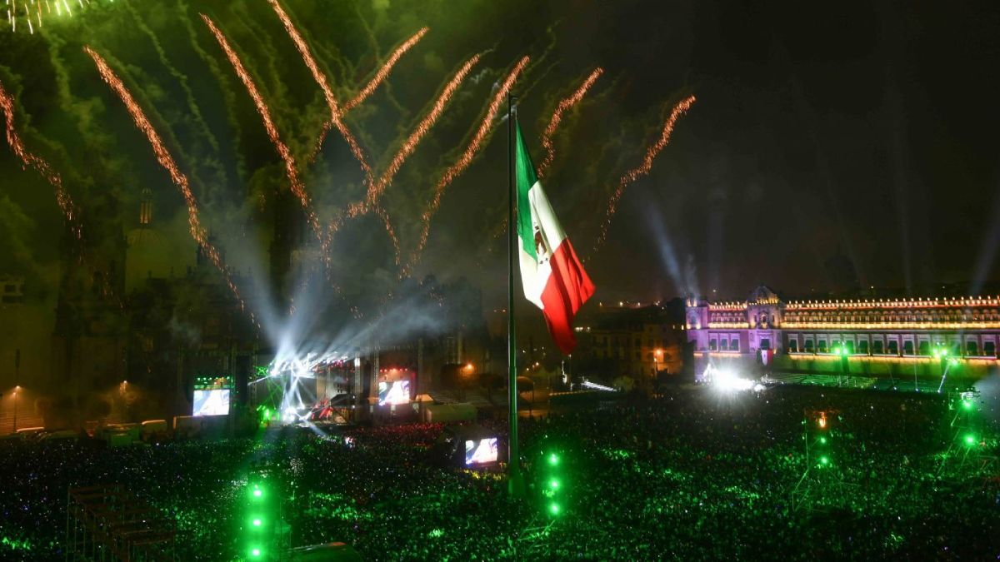

¡Septiembre, el mes patrio de México, es un canto vibrante a nuestra identidad! Es el momento en que los colores verde, blanco y rojo inundan las calles, los sabores de la comida típica llenan los hogares y el orgullo por nuestra cultura resuena en cada grito de Viva México. Es un tiempo para celebrar la fuerza, la unión y la riqueza de nuestras tradiciones, desde los mariachis hasta las danzas regionales, recordándonos que ser mexicano es llevar en el corazón un legado de lucha, amor y esperanza. ¡Viva México, siempre!

El Día de la Independencia
En México, el 16 de septiembre se conmemora el Día de la Independencia, recordando el "Grito de Dolores" de Miguel Hidalgo en 1810, que inició la lucha contra el dominio español. Tras once años de batallas y líderes como Morelos, Guerrero e Iturbide, la independencia se consumó en 1821 con la entrada del Ejército Trigarante a la Ciudad de México.

Las celebraciones
Las celebraciones comienzan la noche del 15 de septiembre, con plazas adornadas de colores patrios, música de mariachi y antojitos. A las 11 de la noche, el presidente replica el grito desde el Palacio Nacional, agitando la campana original de Dolores e invocando vivas a héroes, la Virgen de Guadalupe y a México, mientras se lanzan fuegos artificiales. Este acto también se replica en municipios, hogares y comunidades mexicanas en el extranjero.

Tradición y sabor
El 16 es día de descanso y se realizan desfiles cívico-militares, actos escolares y misas. En las casas, la fiesta continúa con platillos típicos como pozole, chiles en nogada, mole, tamales, buñuelos y bebidas como tequila o pulque. Este ritual anual no solo honra la gesta libertaria, sino que fortalece la identidad, unidad y orgullo de los mexicanos, recordando que la independencia es un legado vivo de resistencia y esperanza.
Explora el mes patrio
Efemérides
Las fechas más importantes de septiembre, día por día.
Personajes
Personajes ilustres del mes patrio septiembre que tomaron lugar importante en la historia mexicana.
Curiosidades y mitos
Datos sorprendentes detrás de nuestras tradiciones.